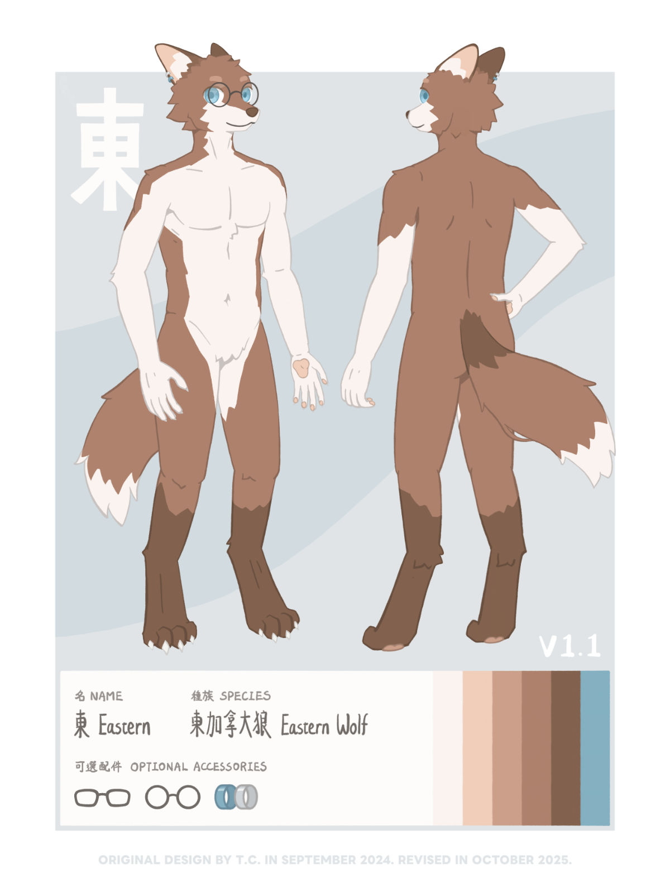

<div class="data-title" data-title="設定"></div>

<ul>
    <li>一匹棕色毛、藍色眼睛的狼。</li>
    <li>腹部毛色為淺褐色接近全白，耳朵、尾巴根部和小腿以下的毛色稍深。</li>
    <li>右耳處有銀色和藍色的兩個耳環。</li>
    <li>尾巴像狐狸一般蓬鬆。</li>
    <li>腳無論畫成趾行還是蹠行都可以。</li>
    <li>可以選擇性配戴眼鏡。</li>
</ul>

<div style="height: 15px;"></div>

